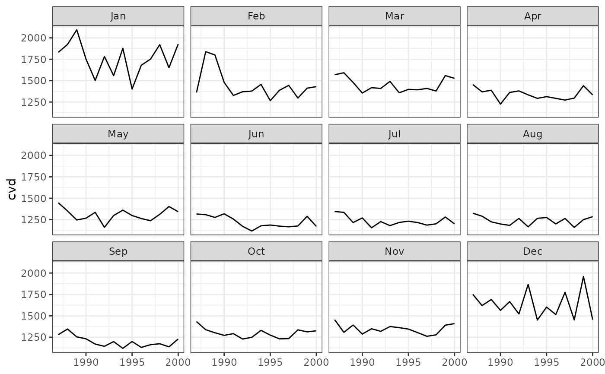
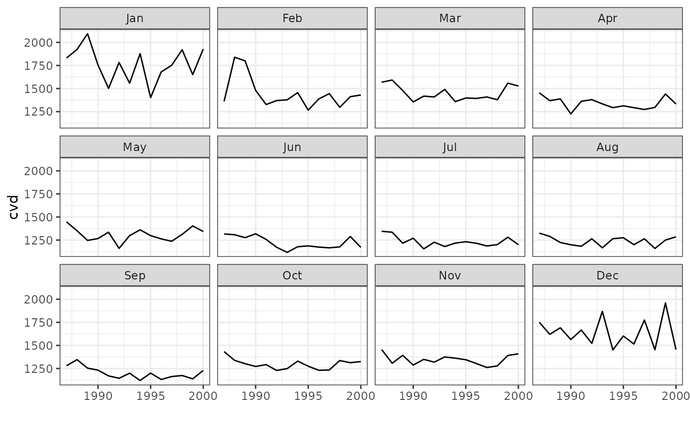

Plots results by month. Assumes the data frame contains variables called year and month.
Details
![[Deprecated]](figures/lifecycle-deprecated.svg) Soft-deprecated in favour of
Soft-deprecated in favour of
plot_month(), which returns a ggplot object you can extend with +.
The existing function still works.
References
Barnett, A.G., Dobson, A.J. (2010) Analysing Seasonal Health Data. Springer. doi:10.1007/978-3-642-10748-1
Author
Adrian Barnett a.barnett@qut.edu.au
Examples
# \donttest{
# Recommended:
plot_month(data = CVD, resp = "cvd", panels = 12)

# Still works, but deprecated:
plotMonth(data = CVD, resp = "cvd", panels = 12)
#> Warning: `plotMonth()` was deprecated in season 0.3.17.
#> ℹ Please use `plot_month()` instead.

# }